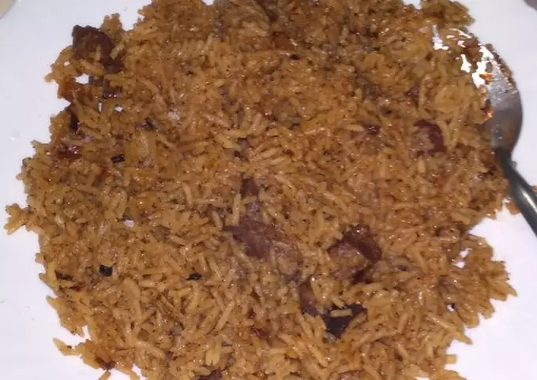

Pilau's recipe

Description
Pilau is the most favorite meal and eas to cook!
Ingredients
- 1/4 meat
- Cardarmon
- ginger
- garlic
- cinnamon and salt
- pilau masala and garam masala
Steps/Procedure
- Heat the oil in the sufuria add the onions stir till brown.
- Add the whole pilau masala,garam masala,cadarmon,cinnamon, nutmeg then stir.
- Add meat to the mixture stir till they get brown, add garlic and ginger stir again,
- Then finally add washed rice then stir till it dries the water.Then you add the water portion according to the amount of rice.
Cover the rice and use low heat.